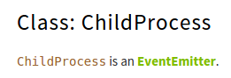

Stability: 4 - API Frozen
Many objects in Node emit events.
process.on('uncaughtException', function(err) { //Uncaught exception
process.on('SIGHUP', function() { //Terminal closed
childProcess1.stderr.on('data', function (data) {
And many others like this:
